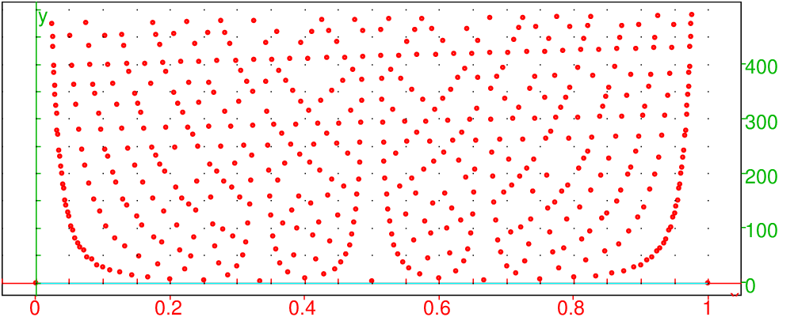
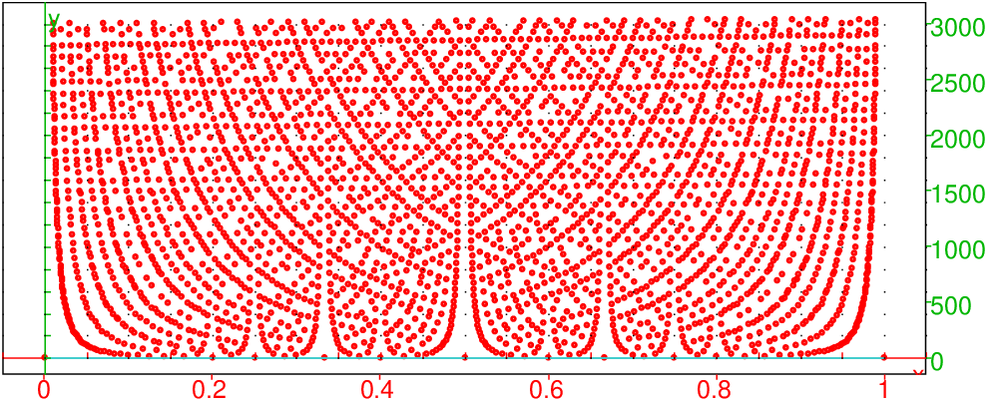
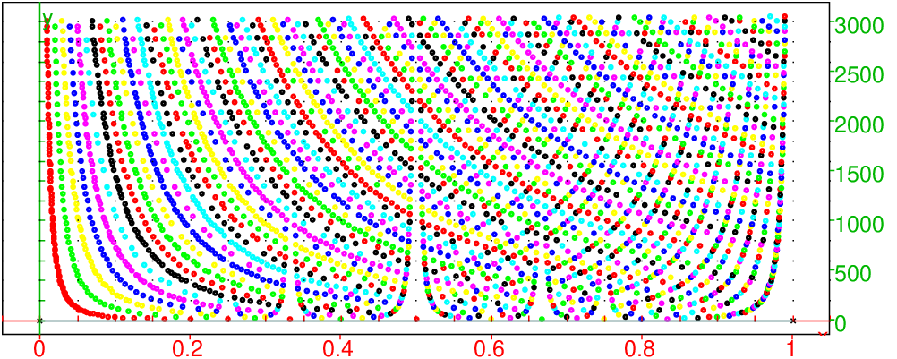
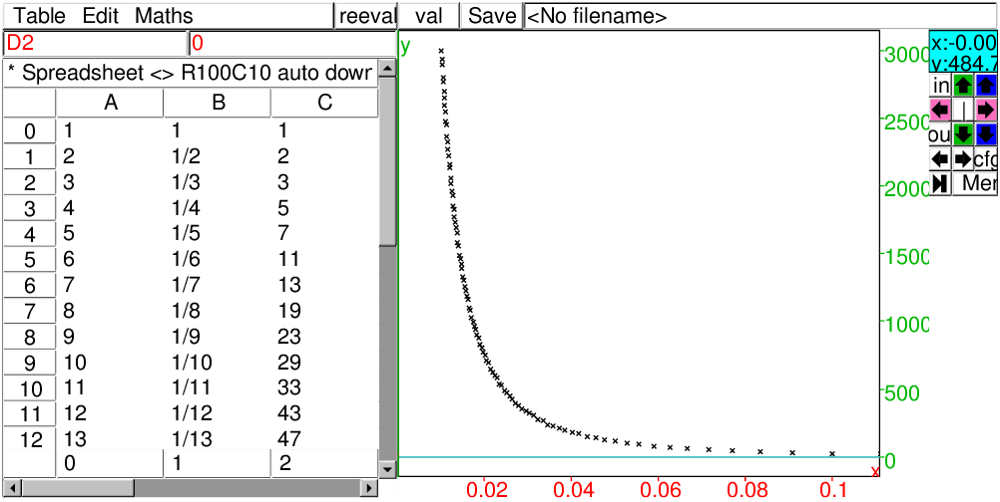
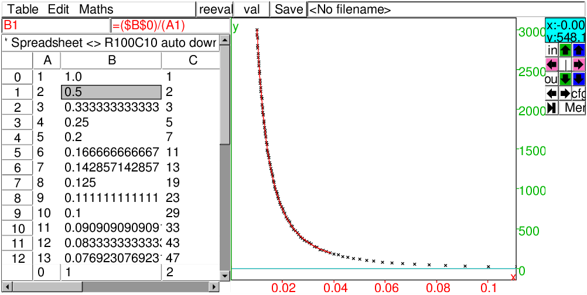

Montrer que la partie entière de a=(3+√5)n est un entier impair quelque soit l’entier n dans ℕ.
On peut faire des essais dans le tableur.
Dans A0 on met 1
Dans A1 on met =A0*(3+sqrt(5))
Dans B0 on met =floor(A0)
Dans B1 on met =floor(B1)
Puis on remplit vers le bas.
Dans cet exercice il faut penser à associer à
(3+√5)n sa quantité conjuguée (3−√5)n.
Dans C0 on met 1
Dans C1 on met =C0*(3-sqrt(5))
Dans D0 on met =floor(A0+C0)
Dans D1 on met =C0*(3-sqrt(5))
Puis on remplit vers le bas.
On remarque que :
b=(3+√5)n+(3−√5)n est un entier pair (d’après la formule du
binôme) et que 0<(3−√5)n<1.
On a donc a<b<a+1, ou encore b−1<a<b avec b un entier pair.
Cela prouve que la partie entière de a=(3+√5)n est b−1
qui est un entier impair.
Quel est, parmi les entiers naturels de 1 à 2005, celui qui admet le plus de diviseurs ? Quel est ce nombre de diviseurs ?
On tape :
2*3*5*7
On obtient :
210
On tape :
2*3*5*7*11
On obtient :
2310
Cela nous dit que le nombre est de la forme :
2a*3b*5c*7d avec a ≥ b ≥ c ≥ d ≥ 0
et alors son nombre de diviseurs est :
(a+1)(b+1)(c+1)(d+1)
On peut maintenant faire une recherche systématique :
Il semble qu’il faut supposer que d ≠ 0 car avec
- b=0,c=0, d=0 on ne peut avoir que 210 qui n’a que 11 diviseurs,
- c=0,d=0 (a+1)(b+1)
vaut 20 pour a=9 et b=1 (29*3=1536)
vaut 28 pour a=6 et b=3 (26*33=1728)
- d=0 (a+1)(b+1)(c+1)
vaut 32 pour a=7, b=1 et c=1 (27*3*5=1920)
vaut 36 pour a=5, b=2 et c=1 (25*32*5=1444)
- si d ≠ 0
On tape :
210*6
On obtient :
1260
et 1260 admet 3*3*2*2=36 diviseurs ou on tape :
size(idivis(1260))
On obtient :
36
On tape :
210*8
On obtient :
1680
et 1680 admet 5*2*2*2=40 diviseurs ou on tape :
size(idivis(1680))
On obtient :
40
On fait une recherche systématique :
210=1024 a 11 diviseurs,
29*3=1536 a 20 diviseurs,
27*32=1116 a 24 diviseurs,
26*33=1728 a 28 diviseurs,
24*34=1296 a 25 diviseurs,
27*3*5=1920 a 32 diviseurs,
25*32*5=1440 a 24 diviseurs,
24*3*5*7=1680 a 40 diviseurs.
1/ Trouver le plus petit nombre entier n qui admet exactement 50
diviseurs.
2/ Existe-t-il un entier m qui soit inférieur à n et qui admette plus
de 50 diviseurs ?
On sait que si n=ap*bq*cr le nombre de diviseurs de n est
(p+1)(q+1)(r+1).
On a :
50=1*50=2*25=10*5=2*5*5
1/ On cherche le plus petit nombre entier qui admet exactement 50 diviseurs,
donc les candidats sont :
249
224*3
29*34
24*34*5
C’est donc 6480=24*34*5
On tape :
size(idivis(6480))
On obtient :
50
2/ On doit avoir :
m<24*34*5 donc pour qu’il est plus que 50 diviseurs il faut que m soit de
la forme m=2p*3q*5r*7s avec p<=4,q<4,r=1,s=1 et 4(p+1)(q+1)>50.
Essayons p=4,q=2, on a 4(p+1)(q+1)=60>50 et m=24*32*5*7=5040.
Donc m= répond à la question.
Soit une séquence L d’objets. On prend 3 objets parmi cette séquence
L. Écrire un programme triplets qui renvoie la séquence de
dimension comb(size(L),3) constituée par les 3 objets obtenus.
Application numérique
L est la liste des diviseurs de n=12.
Soit un entier n. On cherche 3 diviseurs différents n1,n2,n3 de
n, tels que n1+n2+n3 soit aussi un diviseur de n.
Modifier le programme précédent en solutions pour obtenir toutes les
solutions.
Application numérique
n=12
n=60
n=6279
On tape :
triplets(L):={
local LR,LT,j,k,l,s;
LR:=NULL;
LT:=NULL;
s:=size(L)-1;
pour j de 0 jusque s-2 faire
pour k de j+1 jusque s-1 faire
pour l de k+1 jusque s faire
LT:=LT,[L[j],L[k],L[l]];
fpour;
fpour;
fpour;
retourne LT;
}:;
On tape pour n=12 :
LT:=triplets(idivis(12));size(LT);comb(3);comb(6,3)
On obtient :
[1,2,3],[1,2,4],[1,2,6],[1,2,12],[1,3,4],[1,3,6],[1,3,12],
[1,4,6],[1,4,12],[1,6,12],[2,3,4],[2,3,6],[2,3,12],[2,4,6],
[2,4,12],[2,6,12],[3,4,6],[3,4,12],[3,6,12],[4,6,12],20,20
On tape :
solutions(n):={
local LR,LT,L,j,k,l,s;
LR:=NULL;
LT:=NULL;
L:=idivis(n);
s:=size(L)-1;
pour j de 0 jusque s-2 faire
pour k de j+1 jusque s-1 faire
pour l de k+1 jusque s faire
LT:=LT,[L[j],L[k],L[l]];
fpour;
fpour;
fpour;
s:=size(LT)-1;
pour j de 0 jusque s faire
si irem(n,sum(LT[j]))==0 alors
LR:=LR,LT[j];
fsi;
fpour;
retourne LR;
}:;
On tape pour n=12 :
LS:=solutions(12);size(LS)
On obtient 2 solutions (sur les 20 triplets):
[1,2,3],[2,4,6],2
On tape pour n=60 :
LS:=solutions(60);size(LS)
On obtient 20 solutions (sur les 220 triplets):
[1,2,3],[1,2,12],[1,3,6],[1,4,5],[1,4,10],[1,4,15],[1,5,6],
[2,3,5],[2,3,10],[2,3,15],[2,4,6],[2,6,12],[3,4,5],[3,5,12],
[3,12,15],[4,5,6],[4,6,10],[4,6,20],[5,10,15],[10,20,30],20
On tape pour n=6279 :
LS:=solutions(6279);size(LS)
On obtient 9 solutions (sur les 560 triplets):
[1,7,13],[1,21,69],[1,69,91],[3,7,13],[3,13,23],[3,23,273],
[7,23,39],[21,91,161],[23,161,299],9
Quel est le plus petit nombre entier avec lequel il faut multiplier 49 pour obtenir un nombre se terminant par 999999999 (9 neufs) ?
Réponse niveau primaire
On peut faire une multiplication à trous :
| 49*.........=..999999999 |
On trouve :
| 49*693877551=33999999999 |
Réponse niveau collège
On a 9999999999=109−1 et le résultat de la multiplication doit être de
la forme n*109+109−1 avec 0≤ n<49 (ou de la forme p*109−1)
avec 0< p ≤ 49.
On utilise le tableur en cherchant n pour que :
n*109+109−1 soit divisible par 49.
On utilisera les commandes irem(a,b) et iquo(a,b) qui renvoient
respectivement le reste et le quotient de la division euclidienne de a
par b.
Pour cela on met dans la première colonne les nombres de 0 à 48, puis dans
la deuxième colonne les nombres n*109+109−1 pour n de 0 à 48.
Dans la troisième colonne on calcule le reste de la division de la deuxième
colonne par 49 et on trouve que pour n=33 ce reste est nul.
Il reste à calculer iquo(33*10^9+10^9-1,49) et on
trouve :
| 693877551 |
Mais cette méthode est très couteuse !
On peut aller un peu plus vite (surtout si on veut faire les calculs à la
main) en remarquant que 10=3 mod7 et que 100=2 mod49 donc :
103=−1 mod7
106=1 mod7
109=−1 mod7
108=24=16 mod49
109=13 mod49
13*−7=7 mod49
On cherche a tel que a*109=49*k+1=7*p+1.
donc −a=1 mod7 et 13*a=1 mod49
Si a=48 on a 13*a=−13=36 mod49
Si a=41 on a 13*a=13*−1+13*−7=−13+7=−6 mod49
Si a=34 on a 13*a=13*−1+13*−7+13*−7=1 mod49
Donc 34*109=1 mod49
Il reste à calculer iquo(34*10^9-1,49) et on
trouve :
| 693877551 |
Réponse niveau TS
On a : 999999999+1=109.
On cherche p pour avoir : p*49=a*109−1 c’est à dire
1=a*109−p*49.
Avec Xcas on tape :
bezout_entiers(49,10^9)
On obtient :
[306122449,-15,1]
Donc :
49*306122449−15*109=1
et puisque 49*109−49*109=0, on a :
49*(109−306122449)+(15−49)*109=−1.
Puisque 109−306122449=693877551 et (49−15)=34, on a :
| 49*693877551=34*109−1=33999999999 |
Pour faire les calculs à la main on écrit :
109=13 mod49
donc on écrit les 2 premières équations :
| 0*13+1*49=49 |
| 1*13+0*49=13 |
puisque 49=3*13+10 on soustrait 3 fois l’équation 2 à l’équation 1 et on obtient l’équation 3 :
| −3*13+1*49=10 |
puisque 13=1*10+3 on soustrait l’équation 3 à l’équation 2 et on obtient l’équation 4 :
| 4*13−1*49=3 |
puisque 10=3*3+1 on soustrait 3 fois l’équation 4 à l’équation 3 et on obtient l’idendité de Bézout :
| −15*13+4*49=1 |
On a −15=34 mod49 et 109=13 mod49 donc
34*109−1 est divisible par 49.
Il reste à calculer iquo(34*10^9-1,49) et on
trouve :
| 693877551 |
Résoudre en nombres entiers :
| 13x+5y=1 |
| 5x+13y=6 |
Avec Xcas on tape :
bezout_entiers(13,5)
On obtient :
[2,-5,1]
Donc 2*13−5*5=1.
et puisque k*13*5−k*13*5=0, on a :
13*(2+5k)−(5+13k)*5=1.
13x+5y=1 a donc comme solutions x=2+5k,y=−5−13k avec k dans ℤ.
En multipliant l’égalité 13*(2+5k)−(5+13k)*5=1 par 6 on a :
13*(12+30k)−(30+78k)*5=6
5x+13y=6 a donc comme solutions x=−30−78k,y=12+30k avec k dans ℤ.
Trouver les 2 derniers chiffres de 1996919969.
Ici, on est sûr que le dernier chiffre est 9, puisque 19969 est un nombre
impair.
Avec Xcas, on tape :
powmod(19969,19969,100)
On obtient : 29
On peut aussi taper mais le calcul est inefficace :
irem(19969^19969,100)
Trouver les 2 derniers chiffres de 1999619996.
Ici, on est sûr que le dernier chiffre est 6.
Avec Xcas, on tape :
powmod(19996,19996,100)
On obtient : 96
On peut aussi taper directement pour vérifier :
irem(19996^19996,100)
Bijection entre ℚ ∩ [0,1] et ℕ
On construit une bijection f entre les rationnels de [0,1] et ℕ,
pour cela :
| 0,1, |
| , |
| , |
| , |
| , |
| , |
| , ... |
|
| ... |
| ,... |
La fonction f attribue à un rationnel de [0,1] son rang dans la suite L, on a : f(0)=0, f(1)=1, f(1/2)=f(2/4)=2, f(1/3)=3..., f(3/4)=6,..., f(1/5)=7....
On utilise la fonction euler de Xcas qui est l’indicatrice d’Euler c’est à dire euler(n) renvoie le nombre d’entiers inférieurs à n qui sont premiers avec n (euler(n)=card({p<n,gcd(n,p)=1})).
Lppapremb(a,b):={
local L,k;
L:=NULL;
for (k:=1;k<=a;k:=k+1){
if (gcd(k,b)==1) {
L:=L,k;
}
}
return [L];
}:;
On tape :
f(r):={
local s,k,a,b;
a:=numer(r);
b:=denom(r);
s:=0;
for (k:=1;k<=a;k:=k+1){
if (gcd(k,b)==1) {s:=s+1;}
}
return sum(euler(n),n,1,b-1)+s;
}:;
On tape :
tracef(n):={
local L,a,b,valf;
L:=point(0),point(1);
valf:=1;
for (b:=2;b<=n;b:=b+1){
for (a:=1;a<b;a:=a+1){
if (gcd(a,b)==1) {
valf:=valf+1;
L:=L,point(evalf(a/b)+i*valf);
}
}
}
return affichage(L,rouge+point_point+
epaisseur_point_2);
}:;
On tape :

tracer(n):={
local L,a,b;
L:=point(0),point(1);
for (b:=2;b<n;b:=b+1){
for (a:=1;a<b;a:=a+1){
if (gcd(a,b)==1){L:=L,point(evalf(a/b)+i*f(a/b));}
}
}
return affichage(L,rouge+point_point+
epaisseur_point_2);
}:;
Le temps de réponse est beaucoup plus long car le programme calcule à
chaque ètape f(a/b) sans tenir compte des valeurs de f
calculées auparavant. Le temps mis pour faire
tracer(100) est de 160.02s alors que celui de
tracef(100) est de 3.52s.tracerf(n):={
local L,a,b,valf,s,j;
s:=f((n-1)/n);
L:=makelist(0,1,s);
L[0]=<point(0);
L[1]=<point(1);
valf:=1;
j:=2;
for (b:=2;b<=n;b:=b+1){
for (a:=1;a<b;a:=a+1){
if (gcd(a,b)==1) {
valf:=valf+1;
L[j]=<point(evalf(a/b)+i*valf);
j:=j+1;
}
}
}
return affichage(L,rouge+point_point+
epaisseur_point_2);
}:;
On tape :

tracerfc(n):={
local L,a,b,valf,s,j;
s:=f((n-1)/n);
L:=makelist(0,1,s);
L[0]=<point(0);
L[1]=<point(1);L:=point(0),point(1);
valf:=1;j:=2
for (b:=2;b<=n;b:=b+1){
for (a:=1;a<b;a:=a+1){
if (gcd(a,b)==1) {
valf:=valf+1;
L[j]=<point(evalf(a/b)+i*valf,affichage=
irem(a,7)+point_point+epaisseur_point_2);
j:=j+1;
}
}
}
return L;
}:;
On tape :

Approximation d’un nuage de points
La fonction f est la bijection entre ℚ ∩ [0,1] et ℕ qui a èté
définie dans le TP précédent.
| f( |
| )=1+ |
| Φ(k) pour n∈ ℕ* |


^2)fractirred0(n,p):={
local a,b,j,k;
randseed;
k:=0;
pour j de 1 jusque p faire
a:=rand(n)+1;
b:=rand(n)+1;
si gcd(a,b)==1 alors k:=k+1;fsi;
fpour;
retourne evalf(k/p),evalf(6/pi^2);
}:;
On tape :^31,10^6)fractirred1(n,p):={
local a,b,j,k;
randseed;
k:=0;
pour j de 1 jusque p faire
b:=rand(n)+1;
repeter a:=rand(n)+1;jusqua a<=b;
si gcd(a,b)==1 alors k:=k+1;fsi;
fpour;
retourne evalf(k/p),evalf(6/pi^2);
}:;
On tape :randfract(n):= {
local r,a,p,q;
a:=n*(n+1)/2;
r:=rand(a)+1;
q:=floor((-1+sqrt(8*r+1))/2);
p:=r-q*(q+1)/2;
retourne p,q;
}:;
fractirred(n,p):={
local a,b,j,k;
randseed;
k:=0;
pour j de 1 jusque p faire
a,b:=randfract(n);
si gcd(a,b)==1 alors k:=k+1;fsi;
fpour;
retourne evalf(k/p),evalf(6/pi^2);
}:;
On tape :^2+1000.)^2+10000.)
Soit un cercle de rayon R. On appelle corde type les cordes de longueur
a=R√3. La longueur des cordes types est égale à la longueur des
côtés des triangles équilatéraux inscrits dans ce cercle. Le problème
de Joseph Bertrand est :
quelle est la probabilité pour qu’une corde prise au hasard soit plus grande
qu’une corde type ?
Écrire un programme qui simule le choix d’une corde prise au hasard dans un
cercle de rayon 1 lorsque :
Puis expliquez les résultats obtenus.
Les programmes avec Xcas
Une corde type AB d’un cercle de rayon 1 a pour longueur √3 et son
angle au centre vaut 2π/3 i.e si a est l’argument de l’affixe de A et
b est l’argument de l’affixe de B.
simulber10(n):={
local j,a,b,l,s;
s:=0;
pour j de 1 jusque n faire
a:=rand(-pi,pi);
b:=rand(-pi,pi);
l:=2-2*cos(a-b);
si l>3 alors s:=s+1; fsi;
fpour;
retourne s,n,evalf(s/n);
}:;
simulber11(n):={
local j,a,b,c,s;
s:=0;
pour j de 1 jusque n faire
a:=rand(-pi,pi);
b:=rand(-pi,pi);
c:=abs(a-b);
si c>2*pi/3 et c<4*pi/3 alors s:=s+1; fsi;
fpour;
retourne s,n,evalf(s/n);
}:;
On tape :
simulber10(100000) simulber2(n):={
local j,a,b,d,l,s;
s:=0;
pour j de 1 jusque n faire
a:=rand(-pi,pi);
d:=rand(0,pi);
b:=pi+2*d-a;
l:=2-2*cos(a-b);
si l>3 alors s:=s+1; fsi
fpour
retourne s,n,evalf(s/n);
}:;
On tape :
simulber2(100000)simulber3(n):={
local j,a,b,c,l,s;
s:=0;
pour j de 1 jusque n faire
repeter
a:=rand(-1,1);
b:=rand(-1,1);
jusqua a^2+b^2<1;
l:=4*(1-a^2-b^2);
si l>3 alors s:=s+1; fsi;
fpour;
retourne s,n,evalf(s/n);
}:;
On peut remplacer
l:=4*(1-a^2-b^2);si l>3 alors s:=s+1; fsi; par ^2+b^2;si l<1/4 alors s:=s+1; fsi;simulber30(n):={
local j,a,b,c,l,s;
s:=0;
pour j de 1 jusque n faire
a:=alea(-1,1);
c:=sqrt(1-a^2);
b:=alea(-c,c);
l:=4*(1-a^2-b^2);
si l>3 alors s:=s+1; fsi;
fpour;
retourne s,n,evalf(s/n);
}:;
le programme n’est pas correct car dans ce programme a et b ne sont pas
indépendants (voir la remarque du 13.13).^2))/sqrt((1-x^2)),x=0..1/2) simulber4(n):={
local j,r,l,s;
s:=0;
pour j de 1 jusque n faire
r:=rand(-1,1);
l:=4*(1-r^2);
si l>3 alors s:=s+1; fsi
fpour
retourne s,n,evalf(s/n);
}:;
On tape :
simulber4(100000)simulber40(n):={
local j,r,t,m,l,s;
s:=0;
pour j de 1 jusque n faire
r:=rand(-1,1);
t:=rand(0,pi);
m:=r*exp(i*t);
l:=4*(1-r^2);
si l>3 alors s:=s+1; fsi
fpour
retourne s,n,evalf(s/n);
}:;
On tape :
simulber40(100000)r:=rand(-1,1); t:=rand(0,pi); M:=point(r*exp(i*t));ne définit pas des points équirépartis dans le cercle de centre 0 et de rayon 1.
Trouver un nombre entier n vérifiant 4<n<N vérifiant :
n est divisible par 2
n−1 est divisible par 3
n−2 est divisible par 5
n−3 est divisible par 7
n−4 est divisible par 11
On utilise la commande ichinrem.
On tape :
ichinrem([0%2,1%3,2%5,3%7,4%11]))
On obtient :
-788 % 2310
On veut que 0<n<N donc :
n=(2310−788)+2310*k=1522+2310*k avec k≤ iquo((N−1522),2310)
donc si N=10000 on tape :
iquo((10000-1522),2310)
On obtient :
3
On tape :
(1522+2310*k)$(k=0..3)
On obtient :
1522,3832,6142,8452
On utilise la commande iabcuv qui étant donné trois entiers
a,b,c renvoie une liste de deux entiers
relatifs [u,v] vérifiant a*u+b*v=c.
Remarque
On cherche n vérifiant :
n est un multiple de 2 et aussi un multiple de 3 plus 1.
Donc on a : n=2p=3q+1 avec p∈ ℤ et q∈ ℤ.
c’est à dire 2p−3q=1.
On tape : iabcuv(2,3,1)
On obtient : [-1,1]
Donc n=2*(−1+3k)=−2 % 6.
De plus n est un multiple de 5 plus 2.
Donc on a : n=5r+2=−2+6k avec r∈ ℤ et k∈ ℤ.
c’est à dire 6k−5r=4.
On tape : iabcuv(6,5,4)
On obtient : [-1,2]
Donc n=6*(−1+5k)−2=−8 % 30.
De plus n est un multiple de 7 plus 3.
Donc on a : n=7j+3=−8+30k avec j∈ ℤ et k∈ ℤ.
c’est à dire 30k−7j=11.
On tape : iabcuv(30,7,11)
On obtient : [2,-7]
Donc n=30*(2+7k)−8=52 % 210.
De plus n est un multiple de 11 plus 4.
Donc on a : n=11m+4=52+210k avec m∈ ℤ et k∈ ℤ.
c’est à dire 11m−210k=48.
On tape : iabcuv(11,210,64)
On obtient : [-72,4]
Donc n=11*(−72+210k)+4=−788 % 2310.
On tape : (-788+k*2310)$ (k=1..4)
On obtient : 1522,3832,6142,8452